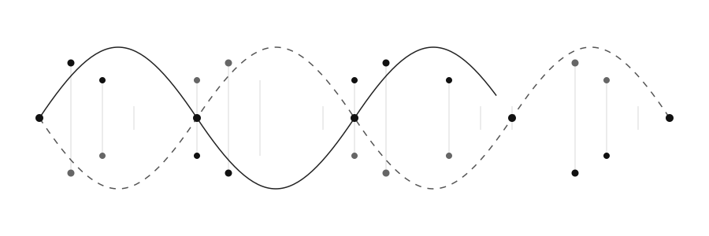
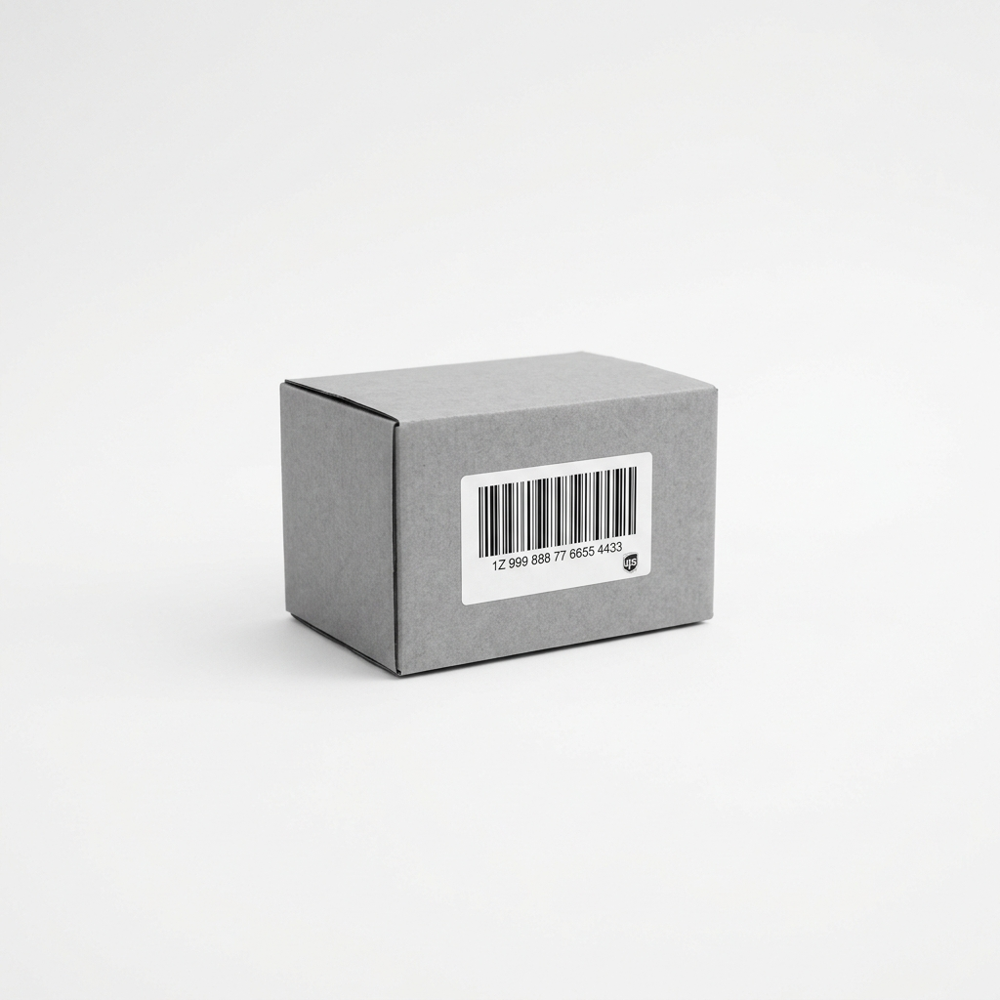
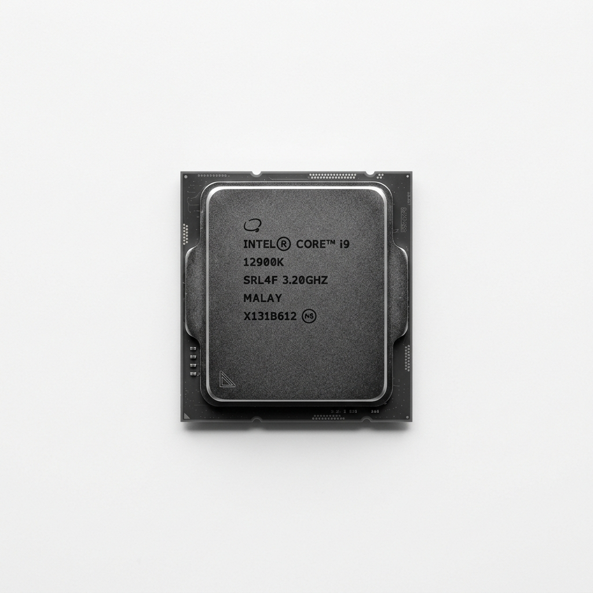

Life Science
Statistical genomics, gene sequencing algorithms, and bioinformatics pipelines mapping complex systems.

E-Commerce
Real-time prediction engines, basket analysis models, and conversion optimization pipelines.

New Tech
Neural architectures, computational vision networks, and generative intelligence exploration.